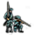
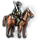
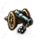

本文介紹了遊戲中構成陸軍的三種陸軍單位（Land units）[1]——步兵、騎兵和炮兵，以及它們各自隨時代推移的強度變化。陸軍單位是陸戰中最為決定性的因素。
 步兵
步兵是軍隊運行的軸心，是交戰中維持陣型不散的中堅力量。所有步兵都至少有1點機動點數。
花費
這些理念和其他修正降低了招募和維護步兵的成本。
| 傳統 | 理念 | 獎勵/野心 | 政策 | |
|---|---|---|---|---|
| -20% |
|
|
|
— |
| -15% |
|
— | — | — |
| -10% |
|
|
|
— |
作戰能力
這些理念和其他修正增加了步兵在戰鬥中的傷害。
| 傳統 | 理念 | 獎勵/野心 | 政策 | |
|---|---|---|---|---|
| +20% |
|
|
— | — |
| +15% |
|
|
|
— |
| +10% |
|
|
|
— |
| +5% | — |
|
— |
|
其他修正包括：
- +10% 政府改革
 大名
大名 - +10% 政府改革 獨立大名
- +10% 政府改革 賦予波里伽爾權力
- +10% 作為信仰
 瑪雅宗教的國家進行宗教改革「中央軍隊改革」
瑪雅宗教的國家進行宗教改革「中央軍隊改革」 - +10% 作為
 中國皇帝頒布「提拔軍官」詔令
中國皇帝頒布「提拔軍官」詔令 - +10% 作為信仰
 儒教的國家和諧神道教
儒教的國家和諧神道教 - +5% 政府改革
 整合僧兵
整合僧兵
 騎兵
前線的部隊被填滿時，騎兵可以其進行最擅長的側翼攻擊。但騎兵的花費要遠遠高於步兵，等量騎兵的花費為步兵的2.5倍。所有騎兵都至少擁有2點機動。騎兵的戰鬥力要強於步兵，尤其是在戰鬥的衝擊階段更是明顯。
但騎兵的編入不得超過其既定比例，一旦超過，全軍都將受到的軍事戰術懲罰，懲罰數值隨騎步比例線性放縮。各種關於  騎兵比例的修正請見下。
騎兵比例的修正請見下。
美洲土著科技組直到6級軍事科技才可以使用騎兵，以模擬馬這種生物在美洲大陸完全滅絕，後又由歐洲人重新引入美洲的這一歷史。
花費
下列理念及修正會減少騎兵的招募和維護花費：
| 傳統 | 理念 | 獎勵/野心 | 政策 | |
|---|---|---|---|---|
| -20% | — |
|
— | — |
| -15% |
|
— | — | — |
| -10% |
|
|
— |
|
| -5% | — |
|
— | — |
在啟用DLC  哥薩克後，依照哥薩克階層的忠誠度和影響力，會有+20%到−20%不等的騎兵花費修正。
哥薩克後，依照哥薩克階層的忠誠度和影響力，會有+20%到−20%不等的騎兵花費修正。 部落階層也會有0到−20%不等的騎兵花費修正。
部落階層也會有0到−20%不等的騎兵花費修正。
作戰能力
以下理念及修正會改變騎兵的作戰能力：
| 傳統 | 理念 | 獎勵/野心 | 政策 | |
|---|---|---|---|---|
| +33% | — |
|
— | — |
| +20% |
|
|
— | — |
| +15% |
|
|
|
— |
| +10% |
|
|
|
|
| +5% | — |
|
— | — |
其他修正包括：
騎兵比例
騎兵比例又稱騎步比，是不計炮兵，單純地以騎兵數量除以步兵和騎兵總數所得的比例。此處的「數量」指的並非是部隊編成時的數量，而是當前騎兵和步兵的實時數量。該數量每日計算，也就是說在騎兵超出比例的次日就將即刻遭受懲罰。鑑於步兵在作戰中的傷亡要遠大於騎兵，建議在部隊配比時就安排超出比例的步兵部隊，以免在交戰中途受到影響。
騎兵比例的基礎值為50%，下列修正會影響此比例：
| 傳統 | 理念 | 獎勵/野心 | 政策 | |
|---|---|---|---|---|
| +10% | — |
|
— | — |
- 擁有
 草原游牧政體獲得+25%
草原游牧政體獲得+25% - 作為
 長生天國家不選擇副宗教獲得+25%
長生天國家不選擇副宗教獲得+25% - 激活萬物皆歸長生天政府改革+25%
- 購買
 地理大發現時代的時代能力
地理大發現時代的時代能力  「騎兵部隊」提供+20%
「騎兵部隊」提供+20% - 作為
 遜尼派國家獲得+10%
遜尼派國家獲得+10% - 擁有忠誠的
 哥薩克階層基於其影響力提供最高+10%
哥薩克階層基於其影響力提供最高+10% - 擁有謝契拉達政府改革獲得+25%
側翼攻擊
下列理念會增加側翼攻擊的寬度：
| 傳統 | 理念 | 獎勵/野心 | 政策 | |
|---|---|---|---|---|
| +50% | — |
|
|
— |
| +25% | — |
|
— | — |
 炮兵
炮兵既和騎兵、步兵一樣參與交戰，又能加速圍城的進程。
和步騎不同的是，炮兵能夠在軍陣的後排作戰，攻擊時只發揮自己戰鬥力的50%，但會將其50%的衝擊和火力防禦點數（不為整數時向下取整；16級炮兵開始提供一點防禦火力點數，29級炮兵提供一點防禦衝擊點數）加到該支炮兵前的那支部隊上。
但一旦炮兵暴露於前排，受到敵軍的直接攻擊，炮兵將承受雙倍的傷害。因此從機制上，一般應保證有充足的步兵、騎兵在前排保護炮兵，使其後排作戰。
花費
下列理念及修正會減少炮兵的招募和維護花費：
| 傳統 | 理念 | 獎勵/野心 | 政策 | |
|---|---|---|---|---|
| -20% | — |
|
— | — |
| -15% | — |
|
— | — |
| -10% | — |
|
— | — |
作戰能力
以下理念及修正會增加炮兵的戰鬥傷害：
 大革命時代的時代能力「改良炮兵射程」：+20%後排炮兵傷害。
大革命時代的時代能力「改良炮兵射程」：+20%後排炮兵傷害。
炮兵單位列表
所有炮兵都至少擁有2點機動。炮兵的花費高達等量步兵的3倍。
請注意： 所有科技組都使用同樣的炮兵單位。
兵種組
各點數的價值（下式的等號都為約等號）：
步兵火力進攻點：衝擊進攻點=1:2(3軍科),1:1(30軍科)；騎兵火力進攻點：衝擊進攻點<1:5（全期）。上面兩個比值的精確值可用科技對兵種的火力加成：衝擊加成精確計算。
前期（7軍科前，之後取決於對方炮兵數量）：衝擊防禦>士氣防禦>>火力防禦；後期（16軍科後炮兵的強勢期，雙方後排滿炮兵，沒有一方前排全騎部隊的情況下）：火力防禦>士氣防禦>衝擊防禦。
騎兵進攻衝擊點>進攻士氣點>>進攻火力點，炮兵進攻火力點>進攻士氣點>>進攻衝擊點
 西歐兵種組
西歐兵種組
 東歐兵種組
東歐兵種組
 安納托利亞兵種組
安納托利亞兵種組
 穆斯林兵種組
穆斯林兵種組
 游牧兵種組
游牧兵種組
| 兵種名稱 | 屬性點數 合計 | |||||||
|---|---|---|---|---|---|---|---|---|
| 攻擊 | 防禦 | 攻擊 | 防禦 | 攻擊 | 防禦 | |||
| 1 | 東方草原騎兵 | 1 | 2 | 6 | ||||
| 1 | 東方密襲騎兵 | 6 | ||||||
| 10 | 草原騎手 | 3 | 2 | 3 | 2 | 10 | ||
| 14 | 草原槍騎兵 | 3 | 3 | 3 | 3 | 12 | ||
| 18 | 草原突襲騎兵 | 3 | 3 | 3 | 3 | 13 | ||
| 23 | 草原騎兵 | 1 | 4 | 3 | 3 | 3 | 15 | |
| 28 | 草原長槍騎兵 | 1 | 4 | 4 | 3 | 18 | ||
 中華兵種組
中華兵種組
 印度兵種組
印度兵種組
 非洲兵種組
非洲兵種組
註：此兵種組由  中非科技組、
中非科技組、 東非科技組以及
東非科技組以及  西非科技組共同使用。
西非科技組共同使用。
 玻里尼西亞兵種組
玻里尼西亞兵種組
| 兵種名稱 | 屬性點數 合計 | |||||||
|---|---|---|---|---|---|---|---|---|
| 攻擊 | 防禦 | 攻擊 | 防禦 | 攻擊 | 防禦 | |||
| 1級 | 玻里尼西亞矛兵 | 2 | 3 | |||||
| 5級 | 改良玻里尼西亞矛兵 | 1 | 1 | 2 | 5 | |||
| 10級 | 玻里尼西亞島嶼戰士 | 1 | 2 | 3 | 8 | |||
| 14級 | 玻里尼西亞火繩槍兵 | 1 | 2 | 1 | 3 | 3 | 12 | |
| 19級 | 玻里尼西亞來復槍兵 | 3 | 2 | 2 | 3 | 2 | 14 | |
| 26級 | 玻里尼西亞游擊步兵 | 4 | 3 | 4 | 3 | 3 | 3 | 20 |
| 兵種名稱 | 屬性點數 合計 | |||||||
|---|---|---|---|---|---|---|---|---|
| 攻擊 | 防禦 | 攻擊 | 防禦 | 攻擊 | 防禦 | |||
| 6級 | 玻里尼西亞騎手 | 1 | 5 | |||||
| 10級 | 玻里尼西亞騎兵 | 3 | 2 | 2 | 10 | |||
| 14級 | 玻里尼西亞驃騎兵 | 1 | 3 | 2 | 3 | 2 | 12 | |
| 18級 | 玻里尼西亞密襲騎兵 | 1 | 2 | 3 | 3 | 3 | 2 | 14 |
| 23級 | 玻里尼西亞龍騎兵 | 2 | 3 | 3 | 4 | 4 | 18 | |
 澳洲原住民兵種組
澳洲原住民兵種組
| 兵種名稱 | 屬性點數 合計 | |||||||
|---|---|---|---|---|---|---|---|---|
| 攻擊 | 防禦 | 攻擊 | 防禦 | 攻擊 | 防禦 | |||
| 6級 | 澳洲原住民騎手 | 1 | 5 | |||||
| 10級 | 澳洲原住民騎兵 | 3 | 2 | 2 | 10 | |||
| 14級 | 澳洲原住民驃騎兵 | 1 | 3 | 2 | 3 | 2 | 12 | |
| 18級 | 澳洲原住民密襲騎兵 | 1 | 2 | 3 | 3 | 3 | 2 | 14 |
| 23級 | 澳洲原住民龍騎兵 | 2 | 3 | 3 | 4 | 4 | 18 | |
 北美洲兵種組
北美洲兵種組
| 兵種名稱[2] | 屬性點數 合計 | |||||||
|---|---|---|---|---|---|---|---|---|
| 攻擊 | 防禦 | 攻擊 | 防禦 | 攻擊 | 防禦 | |||
| 6 | 北美騎手 | 1 | 5 | |||||
| 10 | 北美騎兵 | 3 | 2 | 2 | 10 | |||
| 14 | 北美驃騎兵 | 1 | 3 | 2 | 3 | 2 | 12 | |
| 19 | 北美密襲騎兵 | 1 | 2 | 3 | 3 | 3 | 2 | 14 |
| 23 | 北美龍騎兵 | 2 | 3 | 3 | 4 | 4 | 18 | |
 中美洲兵種組
中美洲兵種組
| 兵種名稱[2] | 屬性點數 合計 | |||||||
|---|---|---|---|---|---|---|---|---|
| 攻擊 | 防禦 | 攻擊 | 防禦 | 攻擊 | 防禦 | |||
| 6 | 中美騎手 | 1 | 5 | |||||
| 10 | 中美騎兵 | 3 | 2 | 2 | 10 | |||
| 14 | 中美驃騎兵 | 1 | 3 | 2 | 3 | 2 | 12 | |
| 19 | 中美密襲騎兵 | 1 | 2 | 3 | 3 | 3 | 2 | 14 |
| 23 | 中美龍騎兵 | 2 | 3 | 3 | 4 | 4 | 18 | |
 南美洲兵種組
南美洲兵種組
註：此兵種組也與  安第斯科技組共享使用。
安第斯科技組共享使用。
| 兵種名稱[2] | 屬性點數 合計 | |||||||
|---|---|---|---|---|---|---|---|---|
| 攻擊 | 防禦 | 攻擊 | 防禦 | 攻擊 | 防禦 | |||
| 6 | 南美騎手 | 1 | 5 | |||||
| 10 | 南美騎兵 | 3 | 2 | 2 | 10 | |||
| 14 | 南美驃騎兵 | 1 | 3 | 2 | 3 | 2 | 12 | |
| 19 | 南美密襲騎兵 | 1 | 2 | 3 | 3 | 3 | 2 | 14 |
| 23 | 南美龍騎兵 | 2 | 3 | 3 | 4 | 4 | 18 | |
 高等美洲兵種組
高等美洲兵種組
高等美洲科技組、兵種組通常情況下不會在遊戲中出現。在不開啟隨機新大陸、自定義國家或轉檔器時，首都位於北美洲、南美洲或者隨機新世界，且科技組為  北美、
北美、  中美、
中美、  南美或
南美或  安第斯科技組的國家可以通過完成新世界任務「日落入侵」，將科技組、兵種組變更為
安第斯科技組的國家可以通過完成新世界任務「日落入侵」，將科技組、兵種組變更為  高等美洲。
高等美洲。
除此之外，高等美洲科技組/兵種組國家可以通過如下方式在遊戲中出現：
- 在隨機新大陸中啟用「幻想元素」選項後，隨機產生擁有高等美洲科技組的國家（需要DLC
 征服天堂）；
征服天堂）； - 在自定義國家選項中使用高等美洲科技組；
- 從啟用「日落入侵」DLC的十字軍之王2轉檔。
| 兵種名稱 | 屬性點數 合計 | |||||||
|---|---|---|---|---|---|---|---|---|
| 攻擊 | 防禦 | 攻擊 | 防禦 | 攻擊 | 防禦 | |||
| 6 | 美洲騎手 | 1 | 1 | 6 | ||||
| 10 | 火神騎兵 | 3 | 2 | 2 | 12 | |||
| 14 | 美洲驃騎兵 | 2 | 3 | 2 | 3 | 2 | 14 | |
| 19 | 美洲密襲騎兵 | 3 | 2 | 3 | 3 | 3 | 2 | 16 |
| 23 | 美洲龍騎兵 | 4 | 2 | 3 | 3 | 4 | 4 | 20 |
不同科技等級下的最強組別
註： 為了避免混亂部分組別使用同一個圖標來代表：
- 北美組也同時代表了
 安第斯組、中美組和 南美組；
安第斯組、中美組和 南美組； - 西非組也同時代表了
 中非組和
中非組和  東非組；
東非組； - 高等美洲組從頭至尾都是當之無愧的最強兵種組，但其並不會出現在絕大多數的遊戲當中，故於下表省略。
- 東方的騎兵在28級科技組前都是沒有任何火力攻擊點數的，而火力攻擊點數對騎兵的價值微乎其微，因而在僅由點數和進行的排名中，東方騎兵的強度並不能得到完全的體現。也正因此，高等美洲組的騎兵要比看上去的要弱得多。
- 步兵
| 最強的科技組 | |
|---|---|
| 1−4 級 | |
| 5−8 級 | |
| 9 級 | |
| 10−11 級 | |
| 12−13 級 | |
| 14 級 | |
| 15−17 級 | |
| 18 級 | |
| 19−22 級 | |
| 23−25 級 | |
| 26−29 級 | |
| 30−32 級 |
- 騎兵
| 最強的科技組 | |
|---|---|
| 1-5 級 | |
| 6-9 級 | |
| 10-13 級 | |
| 14-16 級 | |
| 17 級 | |
| 18-21 級 | |
| 22 級 | |
| 23-25 級 | |
| 26-32 級 |